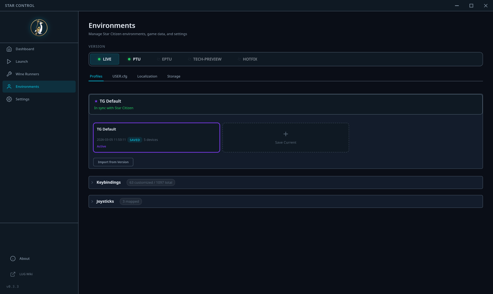

Profiles
Backup and restore your Star Citizen configuration profiles.

Environment Selection
At the top, select which Star Citizen version (environment) to manage. Available options depend on what is installed - typically LIVE, PTU, or EPTU. The selected environment determines which configuration files are used for all profile operations.
Profile Backup
Profiles capture your Star Citizen configuration at a point in time, including:
- actionmaps.xml - Your keybinding configuration
- attributes.xml - Character and game attributes
- USER.cfg - Graphics and performance settings
Creating a Backup
Click Save Profile to create a snapshot of your current configuration. Give it a descriptive name - this helps identify profiles later, especially if you maintain different setups for different play styles.
Restoring a Backup
Select a saved profile from the list and click Load Profile to restore it. This overwrites the current configuration files with the saved versions.
Profile Actions
- Compare - View the differences between your active configuration and a saved profile. Useful for tracking what changed since your last backup.
- Transfer - Copy a profile from one SC version to another (e.g., from LIVE to PTU). This ensures consistent settings across environments.
Profile Status
An indicator shows whether your active configuration matches a saved profile. The changes panel provides a detailed view of what has changed since the last save, helping you decide when to create a new backup.